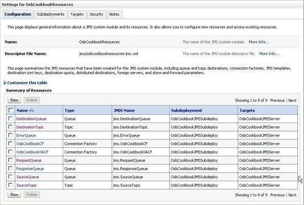

In this chapter, we will cover:
The Java Message Service (JMS) specification defines a standard API for accessing messaging systems. It allows applications to consume and send messages to any JMS-compliant messaging server. JMS supports two distinct message models:
WebLogic Server provides an enterprise-class messaging system called WebLogic JMS that completely supports the JMS API and makes it easy to use JMS from any applications.
Oracle Service Bus integrates very well with JMS. Using WebLogic JMS from an OSB project is very easy. The recipes in this chapter show the basic working with JMS from OSB and how to browse for the messages which are in a queue or topic. This is helpful in case of testing. In Chapter 10, Reliable communication with OSB, we cover how to use JMS to implement reliable messaging.
First let's check which queues exist in the OSB Cookbook standard environment. In the WebLogic console perform the following steps:

We can see the different queues, topics, and the connection factories available in the OSB Cookbook standard environment of our cookbook, created in the Preface chapter.